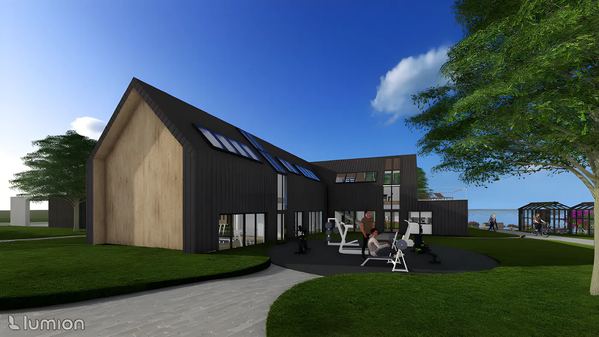
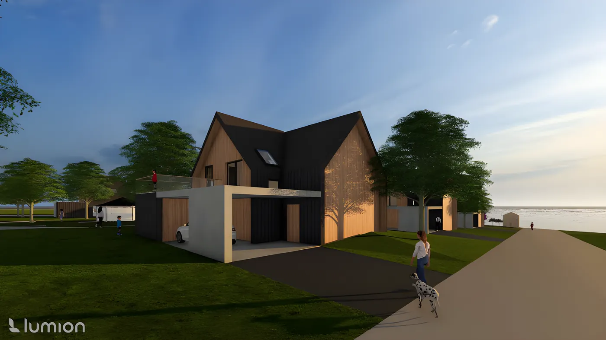
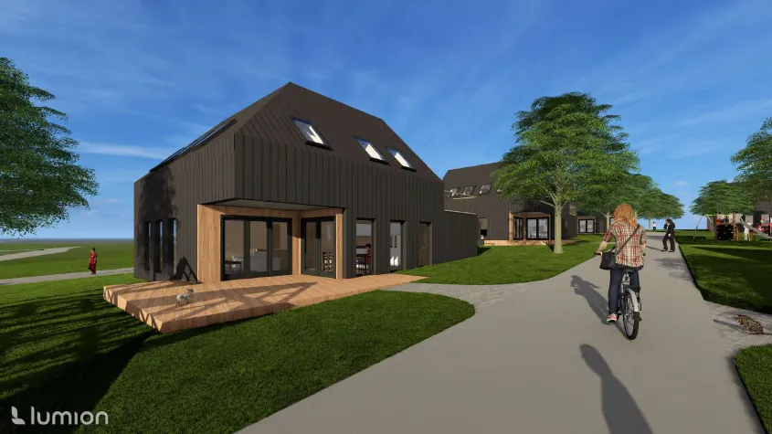
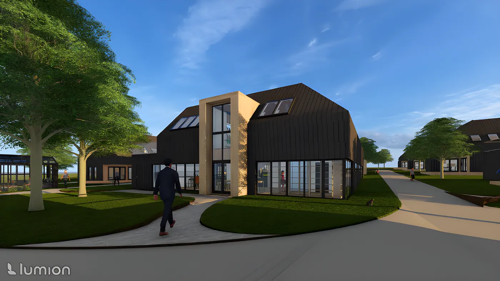
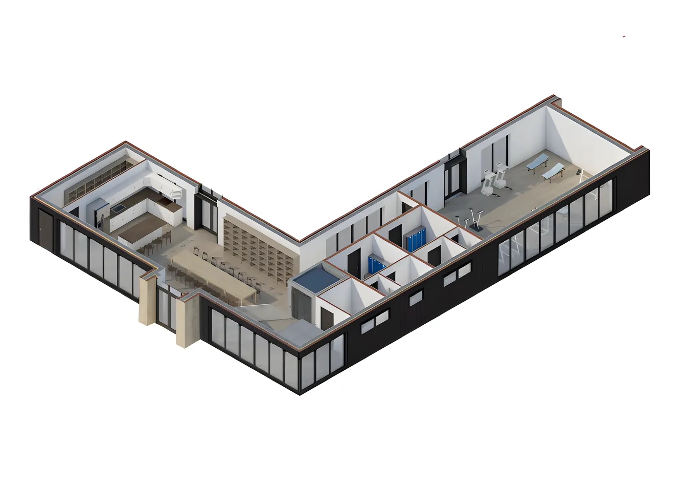
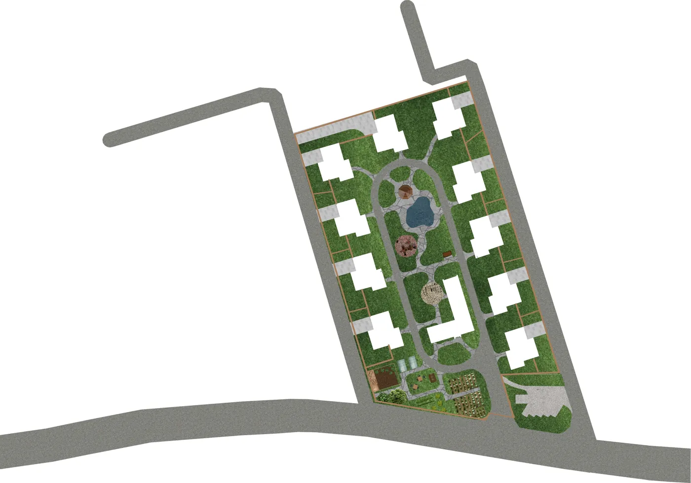
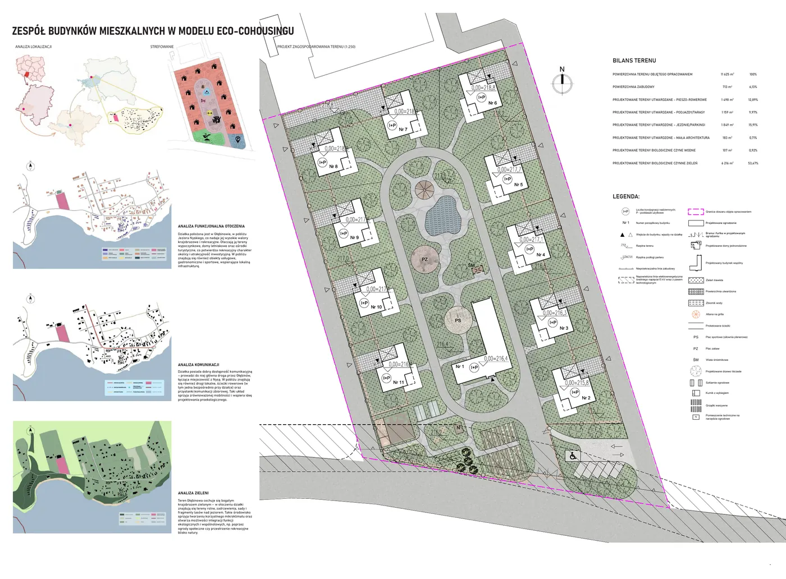
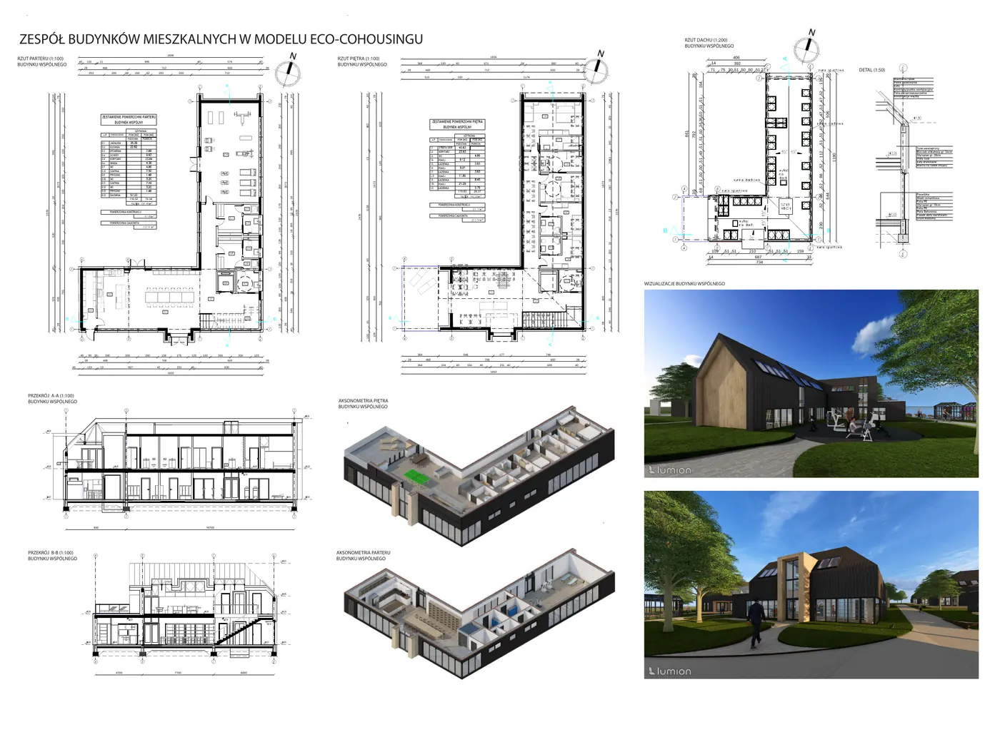
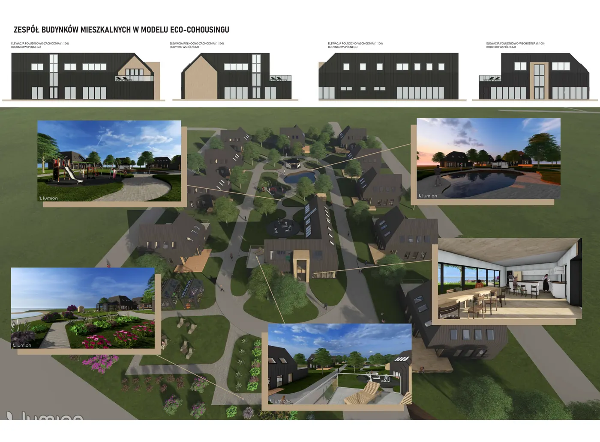
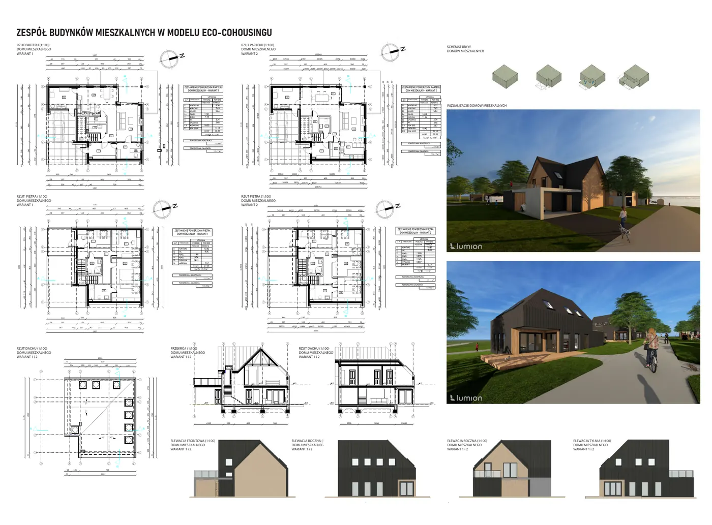

04/ 15
Mieszkalnictwo · Praca dyplomowa inżynierska · 2025
Zespół budynków mieszkalnych w modelu eco‑cohousingu
Domy jednorodzinne skupione wokół budynku wspólnego, ogrodów i szklarni — wspólnota zbudowana na codziennych rytuałach.

Projekt dyplomowy zespołu domów jednorodzinnych zorganizowanych wokół budynku wspólnego, w modelu cohousingu: prywatność mieszkań łączy się tu ze wspólnie użytkowanymi przestrzeniami i ogrodami.
Zagospodarowanie uzupełniają szklarnie i grządki warzywne, kurnik z wybiegiem, zbiornik na wodę, altana, plac zabaw oraz siłownia plenerowa. Ciemne, drewniane bryły z dwuspadowymi dachami nawiązują do tradycyjnej zabudowy, a skala osiedla pozostaje kameralna.
Prywatność domu, wspólnota ogrodu.






—
Plansze
Plansze projektowe w pełnej rozdzielczości — kliknij, aby powiększyć.







